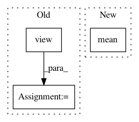

8a04fa2c91f52a9c551849812d450079e667b16a,src/networks.py,LayerNorm,forward,#LayerNorm#Any#,464
Before Change
return
def forward(self, x):
shape = [-1] + [1]*(x.dim() - 1)
mean = x.view(x.size(0), -1).mean(1).view(*shape)
std = x.view(x.size(0), -1).std(1).view(*shape)
x = (x - mean) / (std + self.eps)
if self.affine:
shape = [1, -1] + [1]*(x.dim() - 2)
After Change
//std = x.view(x.size(0), -1).std(1).view(*shape)
//// work for batch size = 1
assert(x.size(0) == 1)
mean = x.mean()
std = x.std()
x = (x - mean) / (std + self.eps)
if self.affine:
shape = [1, -1] + [1]*(x.dim() - 2)
In pattern: SUPERPATTERN
Frequency: 3
Non-data size: 3
Instances
Project Name: HsinYingLee/DRIT
Commit Name: 8a04fa2c91f52a9c551849812d450079e667b16a
Time: 2018-07-28
Author: hytseng0509@gmail.com
File Name: src/networks.py
Class Name: LayerNorm
Method Name: forward
Project Name: naoto0804/pytorch-AdaIN
Commit Name: 7f99fd7e1ea3f3a8b956232234b336ef410e6f91
Time: 2017-12-01
Author: inoue@hal.t.u-tokyo.ac.jp
File Name: function.py
Class Name:
Method Name: adaptive_instance_normalization
Project Name: batra-mlp-lab/visdial-challenge-starter-pytorch
Commit Name: 7db6246fae613a5abf1fbea0b2b987b615ae5a13
Time: 2018-12-26
Author: karandesai281196@gmail.com
File Name: visdialch/encoders/lf.py
Class Name: LateFusionEncoder
Method Name: forward